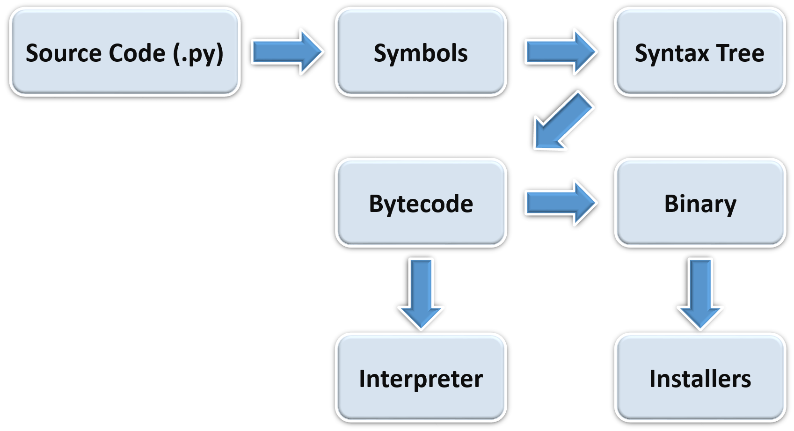

Python is a very High Level, object-oriented, dynamic1, strong typing2, interpreted & interactive programming language.
1. Dynamic Programming language: It at runtime executes many common programming tasks which static programming languages perform during compilation such as
- Computation of code at runtime and late binding
- alteration of Objects at runtime
- Assembling of code at runtime based on the class of instances
2. "strongly typed: Typing errors are prevented at runtime using the implicit type conversion, also it don't have static type checking, i.e. compiler don't check or enforce type constraint rules. The term **duck typing** is now used to describe the dynamic typing paradigm.
Duck typing is an application of the duck test in type safety. It requires that type checking be done at runtime only, and is implemented by use of dynamic typing or by reflection.
It is also an open source language (with license compatible with the General Public License (GPL), but less restrictive, allowing Python to be even incorporated into proprietary products). Its specification is maintained by the Python Software Foundation (PSF).
It is possible to integrate Python with other languages such as C and Fortran. In general terms, it has many similarities with other dynamic languages such as Perl and Ruby.
The language was created in 1990 by Guido van Rossum, at National Research Institute for Mathematics and Computer Science in the Netherlands (CWI) and had originally focused on users as physicists and engineers. Python was designed from another existing language at the time, called ABC.
The official implementation of Python is maintained by the PSF and written in C, and therefore is also known as CPython. The latest stable version is available for download at:
http://www.python.org/download/
For Windows platforms, simply run the installer. For other platforms, such as Linux, Python is usually already part of the system, but in some cases it may be necessary to compile and install the interpreter from the source files.
There are also implementations of Python for. NET (IronPython), JVM (Jython) and Python (PyPy).
Example of Python program:
# the character "#" indicate that rest of the line is a comment
# and will be ignored by the interpreter
# A list of musical instruments
instruments = ['Drums', 'Flute', 'Harmonium', "Guitar"]
# for each instrument in the list of instruments
for instrument in instruments:
print (instrument)
Drums
Flute
Harmonium
Guitar
In above example, instruments is a list containing the items “Drums”, “Flute”, “Harmonium” and “Guitar” and as the for loop is executed instrument corresponds to, an item from items on the list, one at a time.
The source files are usually identified by the extension “.py” and can be run directly by the interpreter:
python apl.py
Thus apl.py will run. On Windows, the file extensions “.py”, “. pyw”, “. pyc” and “. pyo” are associated with Python automatically during installation, so just click a the file to run it. The “. pyw” files run with an alternate version of the interpreter that does not open the console window.
Python uses dynamic typing, which means that the type of a variable is inferred by the interpreter at runtime (this is known as Duck Typing). By the time a variable is created by attribution the interpreter defines the type of a variable, along with the operations that can be applied.
Typing of Python is strong, ie, the interpreter checks whether the transactions are valid and does automatic coercions between incompatible types. In Python, coercions are performed automatically only between types that are clearly related, as integer and long integer. To perform the operation between non-compatible types, you must explicitly convert the type of the variable or variables before the operation.
The source code is translated by Python to bytecode, which is a binary format with instructions for the interpreter. The bytecode is cross platform and can be distributed and run without the original source.
! [Compilation, interpretation and packing] (files/bpyfd_diags1.png)

By default, the parser compiles the code and stores the bytecode on disk, so the next time you run it, there is no need to recompile the program, reducing the load time of execution. If the source files are changed, the interpreter will be responsible for regenerating the bytecode automatically, even using the interactive shell. When a program or a module is invoked, the interpreter performs the analysis of the code, converts to symbols, compiles (if there is no updated bytecode on disk) and runs it in the Python virtual machine.
The bytecode is stored in files with the extension “. pyc” (normal bytecode) or “. pyo” (optimized bytecode). The bytecode can also be packaged along with an executable interpreter, to facilitate the distribution of the application, eliminating the need to install Python on each computer.
The Python interpreter can be used interactively, where lines of code are typed into a prompt (command line) shell similar to the operating system.
python
It is ready to receive commands after the appearance of the signal >>> on the screen:
Python 2.6.4 (r264:75706, Nov 3 2009, 13:20:47)[GCC 4.4.1] on linux2Type "help", "copyright", "credits" or "license" for more information.>>>
On Windows, the interactive mode is also available via the icon “Python (command line)”.
The interactive mode is a distinguishing feature of the language, as it is possible to test and modify code snippets before inclusion in programs, to extract and convert data or even analyze the state of the objects in memory, among other possibilities.
Besides the traditional interactive mode of Python, there are other programs that act as alternatives to more sophisticated interfaces (such as PyCrust):
There are many development tools for Python, such as IDEs, editors and shells (that take advantage of the interactive capabilities of Python).
Integrated Development Environments (IDEs) are software packages that integrate various development tools in an environment consistent with the goal of increasing developer productivity. Generally, IDEs include such features as syntax highlighting (colorized source code according to the syntax of the language), source browsers, integrated shell and code completion (the editor presents possible ways to complete the text it can identify while typing).
Among Python IDEs, there are most popular ones:

(from https://wiki.python.org/moin/IntegratedDevelopmentEnvironments?action=show&redirect=IDE)
Name | Platform | Updated | Notes |
Thonny | Windows, Linux, Mac OS X, more | 2016 | For teaching/learning programming. Focused on program runtime visualization. Provides stepping both in statements and expressions, no-hassle variables view, separate mode for explaining references etc. |
Komodo | Windows/Linux/Mac OS X | 2012 | Multi-language IDE with support for Python 2.x and Python 3. Available as Komodo IDE (commercial). |
LiClipse | Linux/Mac OS X/Windows | 2015 | Commercial Eclipse-based IDE which provides a standalone bundling PyDev, Workspace Mechanic, Eclipse Color Theme, StartExplorer and AnyEdit, along with lightweigth support for other languages, and other usability enhancements (such as multi-caret-edition). |
NetBeans | Linux, Mac, Solaris, Windows | 2009 | Python/Jython support in NetBeans — Open source, allows Python and Jython Editing, code-completion, debugger, refactoring, templates, syntax analysis, etc.; see also http://wiki.netbeans.org/Python. UPDATE: Netbeans 7.0 released without Python support. Check http://wiki.netbeans.org/Python70Roadmap for upcoming Python support. |
PyCharm | Linux/Mac OS X/Windows | 2014 | Free open-source IDE with a smart Python editor providing quick code navigation, code completion, refactoring, unit testing and debugger. Has a commercial Professional edition that fully supports Web development with Django, Flask, Mako and Web2Py and allows to develop remotely. Free PyCharm professional licenses for open-source projects. |
Python for VS Code | Linux/Mac OS X/Windows | 2016 | Free open-source extension for Visual Studio Code. Supports syntax highlighting, debugging, code completion, code navigation, refactoring, with support for Django, multi threaded, local and remote debugging. |
KDevelop | Linux/Mac OS X/(Windows) | 2014 | Free open-source IDE with a focus on static analysis-based code completion, navigation and highlighting. Also features a VI emulation mode. |
PyDev | Eclipse | 2015 | Free, open-source plugin for Eclipse — Allows Python, Jython, and IronPython editing, code-completion, debugger, refactoring, quick navigation, templates, code analysis, unittest integration, Django integration, etc. |
Wing IDE | Windows, Linux, Mac OS X | 2016 | Commercial Python IDE with advanced debugger, editor with vi, emacs, visual studio and other key bindings, auto-completion, auto-editing, snippets, goto-definition, find uses, refactoring, unit testing, source browser, and much more. There are several product levels, including free and paid versions with a fully functional trial with up to three 10 day trial periods. See product features and pricing for details. |
PyScripter | Windows | 2012 | MIT licensed IDE written in Delphi with debugger, integrated unit testing, source browser, code navigation and syntax coloring/auto-completing editor. |
Pyshield | Windows, Linux | 2010 | Commercial IDE tool used to edit, debug Python script, publish encrypted scripts, build a standalone executable file, manage more files by project view, and make installation in various forms(.msi, .tar.gz, .rpm, .zip, .tar.bz2). It includes an editor simulating Emacs python-mode, a GUI debugger simulating GDB, a project view used to manage scripts, modules, extensions, packages, platform specific data files, and GUI interface to make installation. |
Spyder | Windows/Linux/Mac OS X | 2012 | Free open-source scientific Python development environment providing MATLAB-like features: console with variable browser, sys.path browser, environment variables browser, integrated plotting features, autocompletion and tooltips - editor with syntax highlighting, class/function browser, pyflakes/pylint code analysis, inline find/replace and search in files features, code completion and tooltips. 100% pure Python, part of Python(x,y) distribution (Windows/Linux). |
IDLE | Windows/Linux/Mac OS X/All Tk Platforms | 2009 | Multi-window colorized source browser, autoindent, autocompletion, tool tips, code context panel, search in files, class and path browsers, debugger, executes code in clean separate subprocess with one keystroke. 100% pure Python, part of Python 2.x and 3.x distributions. |
IdleX | Windows/Linux/Mac OS X/All Tk Platforms | 2012 | IdleX is a collection of over twenty extensions and plugins that provide additional functionality to IDLE, a Python IDE provided in the standard library. It transforms IDLE into a more useful tool for academic research and development as well as exploratory programming. |
µ.dev | Windows (needs to be compiled manually for other platforms) | 2010 | An open-source IDE, created using Lazarus. It’s only for Python. include syntax highlighting, project manager, and uses pdb for debugging. |
Pyzo (formerly IEP) | Windows/Linux/Mac OS X | 2016 | Open-source Python IDE focused on interactivity and introspection, which makes it very suitable for scientific computing. Its practical design is aimed at simplicity and efficiency. Pyzo consists of two main components, the editor and the shell, and uses a set of pluggable tools to help the programmer in various ways: e.g. source structure, interactive help, workspace, file browser (with functionality for searching). Also includes a post-mortem debugger. |
PythonToolkit (PTK) | Windows/Linux/Mac OS X | 2011 | An interactive environment for python built around a matlab style console window and editor. It was designed to provide a python based environment similiar to Matlab for scientists and engineers however it can also be used as a general purpose interactive python environment especially for interactive GUI programming. Features include: Multiple independent python interpreters. Interactively program with different GUI toolkits (wxPython, TkInter, pyGTK, pyQT4 and PySide). Matlab style namespace/workspace browser. Object auto-completions, calltips and multi-line command editing in the console. Object inspection and python path management. Simple code editor and integrated debugger. |
PyStudio | Windows/Linux/Mac OS X | 2012 | Open-source plugin that adds syntax checking, integrated debugger and module search to Editra, a general purpose developer’s text editor that supports python syntax highlighting, auto-indent, auto-completion, classbrowser, and can run scripts from inside the editor. |
Python Tools for Visual Studio | Windows | 2013 | Open-source plugin for Visual Studio 2010, 2012 and 2013. Supports syntax highlighting, debugging and rich intellisense, refactoring, object browser, MPI cluster debugging, Django intellisense and debugging, development REPL window and a debugging REPL window. Supports mixed-mode Python/C/C++ debugging. |
Exedore | Mac OS X | 2013 | Commercial with feature-limited free trial. A Mac-native, single-window IDE inspired by Xcode. Features integrated debugger, tabs, code completion with tab triggers, syntax highlighting themes, search and replace with regex, integrated REPL sessions, goto definition, file browser, integrated documentation browser. As of June 2015, does not support input() meaning any console input using this function is not supported. |
There are also text editors specialized in programming code, which have features like syntax colorization, export to other formats and convert text encoding.
These editors support multiple programming languages, Python among them:
Shell is the name given to interactive environments for executing commands that can be used to test small pieces of code and for activities like data crunching (extraction of information of interest in masses of data and subsequent translation to other formats).
Beyond the standard Python Shell, there are others available:
Packers are utilities that are used to build executables that comprise the bytecode, the interpreter and other dependencies, allowing the application to run on machines without Python installed, which facilitates program distribution.
Among packers for Python, are available:
Frameworks are collections of software components (libraries, utilities and others) that have been designed to be used by other systems.
Some of the most known frameworks availble are:
The name Python was taken by Guido van Rossum from british TV program Monty Python’s Flying Circus, and there are many references to the show in its documentation. For instance, Python’s oficial package repository was called Cheese Shop, the name of one of the frames of the program. Currently, the repository name is Python Package Index (PYPI).
The goals of the project are summarized by Tim Peters in a text called Zen of Python, which can be found in Python itself using the command:
import this
The Zen of Python, by Tim Peters
Beautiful is better than ugly.
Explicit is better than implicit.
Simple is better than complex.
Complex is better than complicated.
Flat is better than nested.
Sparse is better than dense.
Readability counts.
Special cases aren't special enough to break the rules.
Although practicality beats purity.
Errors should never pass silently.
Unless explicitly silenced.
In the face of ambiguity, refuse the temptation to guess.
There should be one-- and preferably only one --obvious way to do it.
Although that way may not be obvious at first unless you're Dutch.
Now is better than never.
Although never is often better than *right* now.
If the implementation is hard to explain, it's a bad idea.
If the implementation is easy to explain, it may be a good idea.
Namespaces are one honking great idea -- let's do more of those!